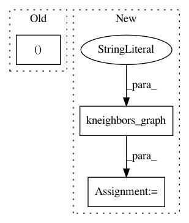

e52e9c8d7536b6315da655164951060642a52707,sklearn/manifold/tests/test_t_sne.py,,test_barnes_hut_angle,#,609
Before Change
k = n_samples - 1
bt = BallTree(distances)
distances_nn, neighbors_nn = bt.query(distances, k=k + 1)
neighbors_nn = neighbors_nn[:, 1:]
distances_nn = np.array([distances[i, neighbors_nn[i]]
for i in range(n_samples)])
After Change
n_samples, n_components)
n_neighbors = n_samples - 1
distances_csr = NearestNeighbors().fit(data).kneighbors_graph(
n_neighbors=n_neighbors, mode="distance")
P_bh = _joint_probabilities_nn(distances_csr, perplexity, verbose=0)
kl_bh, grad_bh = _kl_divergence_bh(params, P_bh, degrees_of_freedom,
n_samples, n_components,
angle=angle, skip_num_points=0,
In pattern: SUPERPATTERN
Frequency: 3
Non-data size: 3
Instances
Project Name: scikit-learn/scikit-learn
Commit Name: e52e9c8d7536b6315da655164951060642a52707
Time: 2019-09-18
Author: tom.dupre-la-tour@m4x.org
File Name: sklearn/manifold/tests/test_t_sne.py
Class Name:
Method Name: test_barnes_hut_angle
Project Name: scikit-learn/scikit-learn
Commit Name: e52e9c8d7536b6315da655164951060642a52707
Time: 2019-09-18
Author: tom.dupre-la-tour@m4x.org
File Name: sklearn/manifold/tests/test_t_sne.py
Class Name:
Method Name: test_binary_perplexity_stability
Project Name: scikit-learn/scikit-learn
Commit Name: e52e9c8d7536b6315da655164951060642a52707
Time: 2019-09-18
Author: tom.dupre-la-tour@m4x.org
File Name: sklearn/manifold/t_sne.py
Class Name: TSNE
Method Name: _fit